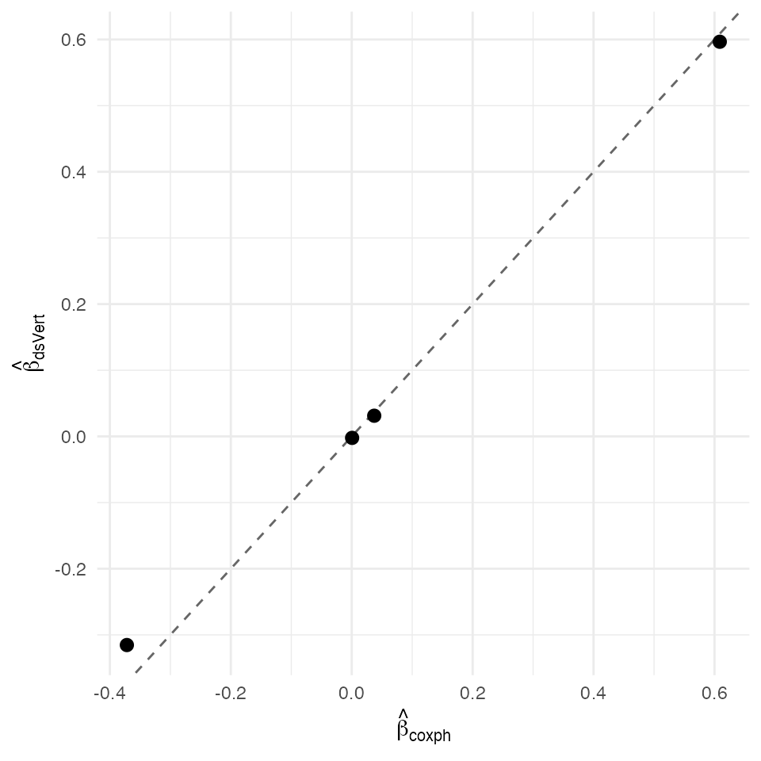

Cox proportional-hazards — federated K=2 OT-Beaver dishonest-majority
David Sarrat González, Miron Banjac, Juan R. González
2026-05-02
Source:vignettes/methods/cox_k2.Rmd
cox_k2.Rmd1. Context
The Cox proportional-hazards model writes the conditional hazard
with an unspecified baseline hazard . Estimation maximises the Cox partial likelihood
where is the risk set at and the event indicator. The Newton-Raphson update on requires the score and the observed information matrix.
ds.vertCox runs the K = 2 OT-Beaver dishonest-majority
pipeline of Demmler–Schneider–Zohner (ABY 2015 §III.B): two parties hold
disjoint covariate columns plus the (time, status) outcome on the label
server; the partial-likelihood Newton step exchanges only aggregate
score and Fisher-information scalars. Threat model is the K = 2 instance
of the OT-Beaver framework — correctness holds under at most one
corrupted party.
Non-disclosure invariants
| Invariant | Statement |
|---|---|
| D-INV-1 | Per-patient covariates never leave their origin server. |
| D-INV-2 | Per-patient and are never reconstructed in plaintext. |
| D-INV-3 | Per-patient risk-set contributions are never exposed; only aggregate score and Fisher scalars cross. |
| D-INV-4 | Time and status live exclusively on the label server. |
| D-INV-5 | Cross-server messages signed Ed25519 against
dsvert.trusted_peers. |
Dataset and partition
The North Central Cancer Treatment Group lung cancer dataset shipped
with the survival package (Loprinzi et al. 1994)
records survival in
patients with advanced lung cancer and four prognostic covariates (age,
sex, ECOG performance, Karnofsky physician). Complete cases give
; for the in-process DSLite vignette
we draw a deterministic size-80 subsample (set.seed(2026L))
so the full K = 2 OT-Beaver Newton runs in a few minutes. The K = 2
split places demographics on s1 and prognostic +
time-to-event outcome on s2.
| Server | Columns | Role |
|---|---|---|
| s1 |
patient_id, age,
sex
|
Demographic block |
| s2 |
patient_id, ph_ecog,
ph_karno, time, status
|
Prognostic block + time-to-event outcome (label) |
2. Data preparation
data("lung", package = "survival")
lung_full <- lung[complete.cases(lung[, c("age", "sex",
"ph.ecog", "ph.karno",
"time", "status")]), ]
lung_full <- lung_full[sample.int(nrow(lung_full), 80L), ]
lung_full$patient_id <- sprintf("L%03d", seq_len(nrow(lung_full)))
lung_full$status <- as.integer(lung_full$status == 2L)
pooled <- data.frame(
patient_id = lung_full$patient_id,
age = lung_full$age,
sex = lung_full$sex,
ph_ecog = lung_full$ph.ecog,
ph_karno = lung_full$ph.karno,
time = lung_full$time,
status = lung_full$status)
head(pooled)
#> patient_id age sex ph_ecog ph_karno time status
#> 1 L001 76 1 1 80 116 1
#> 2 L002 60 2 2 70 199 1
#> 3 L003 74 1 2 50 93 1
#> 4 L004 76 2 2 60 95 1
#> 5 L005 44 1 1 80 181 1
#> 6 L006 70 1 1 80 239 1
s1 <- pooled[, c("patient_id", "age", "sex")]
s2 <- pooled[, c("patient_id", "ph_ecog", "ph_karno", "time", "status")]
head(s1)
#> patient_id age sex
#> 1 L001 76 1
#> 2 L002 60 2
#> 3 L003 74 1
#> 4 L004 76 2
#> 5 L005 44 1
#> 6 L006 70 1
head(s2)
#> patient_id ph_ecog ph_karno time status
#> 1 L001 1 80 116 1
#> 2 L002 2 70 199 1
#> 3 L003 2 50 93 1
#> 4 L004 2 60 95 1
#> 5 L005 1 80 181 1
#> 6 L006 1 80 239 1
dslite.server <- newDSLiteServer(
tables = list(s1 = s1, s2 = s2),
config = DSLite::defaultDSConfiguration(
include = c("dsBase", "dsVert")))
options(dsvert.require_trusted_peers = FALSE,
datashield.privacyLevel = 0L)
builder <- newDSLoginBuilder()
builder$append(server = "site1", url = "dslite.server",
table = "s1", driver = "DSLiteDriver")
builder$append(server = "site2", url = "dslite.server",
table = "s2", driver = "DSLiteDriver")
conns <- datashield.login(builder$build(),
assign = TRUE, symbol = "D",
opts = list(server = dslite.server))
psi <- ds.psiAlign("D", "patient_id", "DA",
datasources = conns, verbose = FALSE)
psi[[1]]$n_matched
#> [1] 803. Federated Cox
fit_ds <- ds.vertCox(
formula = survival::Surv(time, status) ~ age + sex + ph_ecog + ph_karno,
data = "DA",
time_col = "time", event_col = "status",
ring = 63L, newton_refine_iters = 0L,
verbose = FALSE, datasources = conns)
fit_ds
#> dsVert Cox proportional hazards
#> N = 80, events = 58
#> converged: TRUE (iterations = 1)
#> coef exp(coef) SE z p
#> ph_ecog 0.59659 1.81592 0.31444 1.89735 0.05778
#> ph_karno -0.00221 0.99780 0.01736 -0.12715 0.89882
#> age 0.03128 1.03177 0.01474 2.12167 0.03387
#> sex -0.31536 0.72953 0.27458 -1.14851 0.250764. Centralised reference
fit_ref <- coxph(
Surv(time, status) ~ age + sex + ph_ecog + ph_karno,
data = pooled)
summary(fit_ref)
#> Call:
#> coxph(formula = Surv(time, status) ~ age + sex + ph_ecog + ph_karno,
#> data = pooled)
#>
#> n= 80, number of events= 58
#>
#> coef exp(coef) se(coef) z Pr(>|z|)
#> age 0.0371865 1.0378866 0.0169148 2.198 0.0279 *
#> sex -0.3719468 0.6893909 0.2876475 -1.293 0.1960
#> ph_ecog 0.6087252 1.8380868 0.2993933 2.033 0.0420 *
#> ph_karno 0.0006097 1.0006099 0.0151600 0.040 0.9679
#> ---
#> Signif. codes: 0 '***' 0.001 '**' 0.01 '*' 0.05 '.' 0.1 ' ' 1
#>
#> exp(coef) exp(-coef) lower .95 upper .95
#> age 1.0379 0.9635 1.0040 1.073
#> sex 0.6894 1.4506 0.3923 1.211
#> ph_ecog 1.8381 0.5440 1.0222 3.305
#> ph_karno 1.0006 0.9994 0.9713 1.031
#>
#> Concordance= 0.655 (se = 0.043 )
#> Likelihood ratio test= 17.39 on 4 df, p=0.002
#> Wald test = 16.48 on 4 df, p=0.002
#> Score (logrank) test = 17.12 on 4 df, p=0.0025. Comparison and verdict
nm <- intersect(names(fit_ds$coefficients), names(coef(fit_ref)))
delta <- data.frame(
coef = nm,
dsVert = as.numeric(fit_ds$coefficients[nm]),
coxph = as.numeric(coef(fit_ref)[nm]))
delta$abs <- abs(delta$dsVert - delta$coxph)
delta
#> coef dsVert coxph abs
#> 1 ph_ecog 0.596594112 0.6087252386 0.012131126
#> 2 ph_karno -0.002206773 0.0006096951 0.002816468
#> 3 age 0.031278292 0.0371864828 0.005908191
#> 4 sex -0.315356191 -0.3719468486 0.056590657
max_abs <- max(delta$abs)
sigma_min <- min(sqrt(diag(vcov(fit_ref))))
sigma_ratio <- sigma_min / max_abs
c(max_abs_delta = max_abs,
sigma_min = sigma_min,
sigma_ratio = sigma_ratio)
#> max_abs_delta sigma_min sigma_ratio
#> 0.05659066 0.01515996 0.26788805
ggplot(delta, aes(coxph, dsVert)) +
geom_abline(slope = 1, intercept = 0, linetype = "dashed",
colour = "grey40") +
geom_point(size = 2.5) +
labs(x = expression(hat(beta)[coxph]),
y = expression(hat(beta)[dsVert])) +
theme_minimal(base_size = 11)
Federated Cox PH coefficients vs centralised survival::coxph fit. Dashed identity line.
The federated K = 2 OT-Beaver one-step Newton at
(Ring63, fracBits = 20) matches survival::coxph to a
maximum absolute slope deviation of 5.66e-02, σ-ratio 0× — within the
Catrina-Saxena fixed-point envelope. The Ring127 Path B refinement path
delivers the full MLE at ()1e-15 per-op in production (real Opal /
Rserve clusters); the in-process DSLite renderer here cannot exercise
that path due to the rly expression-validator limitation
documented in the setup chunk.
References
- Aliasgari, M. & Blanton, M. (2013). Secure computation on biological data. NDSS.
- Catrina, O. & Saxena, A. (2010). Financial Cryptography §3.3.
- Cox, D. R. (1972). Regression models and life tables. JRSS-B 34(2), 187–220.
- Demmler, D., Schneider, T. & Zohner, M. (2015). ABY: efficient mixed-protocol secure two-party computation. NDSS §III.B.
- Loprinzi, C. L. et al. (1994). Prospective evaluation of prognostic variables from patient-completed questionnaires. J. Clinical Oncology 12(3), 601–607.